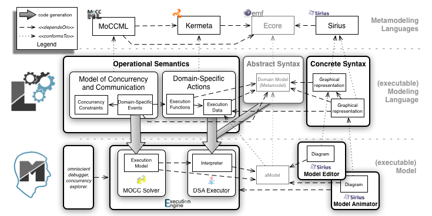

In the previous post on model animation and debugging, we have presented the tool-supported approach proposed by the GEMOC studio to complement an Ecore metamodel with a behavioral semantics, and automatically get an advanced execution environment which provide graphical animation and omniscient debugging facilities.
The task of the language engineer is thus reduced to the definition of the domain-specific information, both in terms of the language syntax and the language semantics. Dedicated meta-languages (i.e., language to define languages) are provided to define both parts, namely Ecore for defining the syntax, and Xtend/Kermeta (on top of Java) for expressing the behavioral semantics.
However, the emergence of modern concurrent systems (e.g., Cyber-Physical Systems and Internet of Things) and highly-parallel platforms (e.g., many-core, GPGPU and distributed platforms) call for Domain-Specific Modeling Languages (DSMLs) where concurrency is of paramount importance. Such DSMLs are intended to propose constructs with rich concurrency semantics, which allow system designers to precisely define and analyze system behaviors. However, implementing the execution semantics of such DSMLs is a particularly difficult task. Most of the time the concurrency model remains implicit and ad-hoc in the language design and implementation. In the language design, the concurrency model is usually implicitly inherited from the concurrency model of the meta-language employed to design the behavioral semantics (e.g., the default concurrency model of Xtend/Java), or customized with low-level primitives (e.g., using Threads). In the language implementation, the concurrency model is mostly embedded in the underlying execution environment (e.g., the concurrency model of the JVM).
The lack of an explicit concurrency model in language specifications prevents : the precise definition, the variation and the complete understanding of the DSML’s semantics, the effective usage of concurrency-aware analysis techniques, and the exploitation of the concurrency model during the system refinement (e.g., during its allocation on a specific platform).
Here MoCCML (Model of Concurrency and Communication Modeling Language) comes!
To reason over temporal properties of concurrent or distributed systems (e.g., for design space exploration, scheduling, allocation analysis, etc.), MoCCML supports the reification of a formal model of concurrency in executable modeling languages, independently of a particular execution environment.
In the context of the ANR project GEMOC, we have defined a concurrency-aware executable metamodeling approach, which supports a modular definition of the execution semantics, including the concurrency model, the semantic rules (aka. domain-specific actions, DSA), and a well-defined and expressive communication protocol between them. The protocol supports both the mapping of the concurrency model to the semantic rules, and the feedback, possibly with data, from the semantic rules to the concurrency model. The concurrent executable metamodeling approach comes with an additional dedicated meta-language, namely MoCCML, to define the concurrency model and the protocol, as well as the associated execution environment to simulate and analyze the concurrency of behavioral models.
MoCCML provides a declarative meta-language, which comes with a model editor combining textual and graphical notations, to complement an executable metamodel with:
At any moment during a run, an event that does not violate the constraints can occur. These constraints can also be of a different kinds, for instance to express a deadline, a minimal throughput or a hardware deployment.
The constraints are eventually instantiated to define the execution model of a specific model. The execution model is a symbolic representation of all the acceptable schedules for a particular model. To enable the automatic generation of the execution model, the concurrency model is weaved into the context of specific concepts from the abstract syntax of a DSML. This contextualization is defined by a mapping between the elements of the abstract syntax and the constraints of the concurrency model. The separation of the mapping from the concurrency model makes the concurrency model independent of the DSML so that it can be reused, and semantic variation points can be managed for a single abstract syntax.

In our approach, the execution model is acting as the configuration of a generic execution engine that can be used for simulation or analysis of any model conforming to the abstract syntax of the DSML. The modeling workbench of the GEMOC studio provide several generic components such as a dedicated control panel and multi-branch timeline to explore the different possible execution of a running model (according to the schedules allowed by the concurrency model), a timing diagram (VCD) to visualize the concurrency constraints of a given execution model, and an external stimuli manager to force some events according to the system environment.
From the sequential version, we reuse the exact same abstract syntax. The differences are only localized in the definition of the operational semantics. The only file to be changed is the Xtend file, which defines the sequential call of the execution functions. Then we have to create two new files. A first one which defines the events of interest in the system and the constraints between them (in ECL) and a file defining the constraints themselves (in MoCCML).
In the context of Arduino designer, the executions functions define, for each instructions, how the model state must be modified. In the sequential version, the main function defined the control flow between the different execution function. By removing it, the execution functions from the different instructions are not linked by a control flow anymore. We can now define the model of concurrency and communication for our concurrent version of arduino designer.
To define the concurrent control flow, we first define the triggers of the execution functions; i.e., some Domain Specific Events (DSE). A DSE is defined in the context of a concept of the AS. Then, when applied on a specific model, for each instance of the concept, the corresponding DSE are also instantiated. We name Model Specific Event (MSE) the instantiation of a DSE. A MSE is associated to the instance of the concept the DSE is linked with. an MSE is an ordered set of occurrences. When a DSE is mapped to an execution function, each MSE occurrence calls the execution function on its instance.
For instance, in Arduino Designer, we defined a start and a stop DSE in the context of Sketch (see below). Consequently, for each instance of Sketch in a model, the GEMOC studio will automatically instantiate an instance of start and stop. These MSE are then visible to the model designer when she/he executes its model step by step. We also defined a start and a stop DSE in the context of an instruction. This definition is in our case conditional since we do not want to have MSE for the instances of a ModuleGet instruction. For all the other Instruction instances, a start and stop MSE will be automatically instantiated. The start DSE is linked to the execute() execution function. Consequently, each time a start MSE occurs, the execute function is called on the object associated to the MSE. Exactly the same mechanism happens for the instances of the stop DSE.
Once all the DSE are defined (see here), all the associated execution functions can be called in any arbitrary order since the DSE are not constrained each other, yet. To constrain the order of the MSE occurrences, we put constraints between the DSE by using specific invariants. These invariants use specific kinds of constraints whose definition is given in MoCCML. MoCCML is an extension of the CCSL language (see here) with the possibility to specify constraint by using automata. For instance, we want to specify that the start of a Sketch occurs first and that later the stop can occur. When stop occurred, the start MSE can occur again. In other words, the start and stop MSE of a Sketch are alternating each others.
To ensure this constraint, we first define an invariant as the first one below:
This first invariant (S_nonReentrant) specifies that, for each instance of its context, the Alternates constraint must be applied on the formal parameters corresponding to the query defined line 3. This constraint is defined in MoCCML by the following automata:
Definition of the ‘Alternates’ constraint
This automata has two formal parameters: firstClock, and secondClock, which are used on the transitions of the automata. The automata specifies that when in state S1, only firstClock can occur. When it does, the automata goes in state S2 in which only secondClock can occur.
According to the ECL file, this automata is instantiated for each instance of a Sketch with their start and stop MSE as actual parameters.
In the same way the S_startInternalFirst invariant is defined in the context of a Sketch. It specifies that the start event of a Sketch occurs simultaneously (i.e.,in coincidence with) the start of the first instruction of its block (see the query for the second parameter of the Coincides constraint). The Coincides constraint is a built-in constraint that behaves as define here.
By defining such kind of invariants, we restrict the order in which the occurrences of the different MSE can occur, defining a partial order representing the concurrent execution of the system.
all the language workbench sources are available here:
https://github.com/gemoc/arduinomodeling/tree/master/dev/language_workbench_concurrency
Once the DSE are defined and constrained by invariants whose definition is given in MoCCML, the modeling workbench is automatically deployed by the GEMOC studio.
In this modeling workbench we defined an example of three sketches executing in parallel on three arduino boards. The master algorithm reads the button state and changes accordingly a variable which is sent to the 2 slave boards by a Bluetooth connection. The slave boards are then reading the value and they highlight correspondingly the leds they have. Note on the left side all the possible logical steps represent the interleaving due to the concurrent execution of the three algorithm deployed on the three boards.
all the sources of this example can be found here:
https://github.com/gemoc/arduinomodeling/tree/master/dev/modeling_workbench_concurrency
{kind=link}